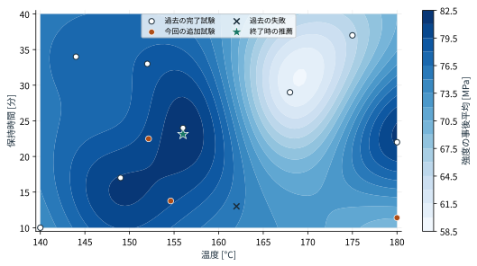
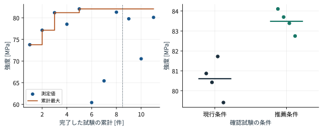

第10章 実問題への適用
学習目標 実験ログの列から入力・目的値・状態を定義する。過去の試験を登録して候補を追加し、終了時の推薦を独立した測定で確認する。
10.1 何を変え、何を比較するか
本書の合成材料に、温度 \(T\) [°C] に加えて保持時間 \(h\) [分] を導入します。試せる範囲は \(140\le T\le180\)、\(10\le h\le40\) とします。現行条件は \(T=148,\ h=20\) です。試験片の強度 \(Y\) [MPa] は繰り返すとばらつきます。ここで高めたいのは、一回の測定値から想定した同じ条件での平均強度 \(\mathbb E[Y\mid T,h]\) です。過去の完了8件と失敗1件があり、新しく選んで測れるのは3件です。推薦後の確認は別枠で計8件を予約します。
現場では、試料の調製手順、装置、ロット、測定方法を整理してからデータをまとめます。例えば、古い装置で温度が高い条件ばかり測っていると、装置差が曲線の形に見えることがあります。本例ではこの交絡を避けるため、同じ模擬ロットと装置で完了する場合を扱います。使う表はすべて合成データです。
| 列 | 意味 | この例での用途 |
|---|---|---|
experiment_id、lot |
試験ID、試料の模擬ロット | 突合と追跡 |
temperature_c、hold_min |
温度 [°C]、保持時間 [分] | GPの2入力、候補提案 |
status |
COMPLETE または FAIL |
学習に使う完了行を判断 |
strength_mpa |
強度 [MPa] | 完了行の目的値 |
failure_reason |
失敗時に記録した理由 | 運用と再測定の判断 |
過去ログはCSVで同梱しています。合成データの過去ログ模擬計測器のタイムアウト1件は強度を欠測にしてあります。0 MPaを入れると、測れなかった条件で「強度が0だった」という別の観測を学習させることになります。実際に条件の不適合で測定が打ち切られる場合は、失敗の種類や測定限界を記録し、制約や打ち切りを表すモデルを検討します。
10.2 実行する DataFrameで読み込み、過去の試験を登録する
第10章のNotebook と同じフォルダで実行します。温度・時間の単位を表の列名で固定し、IDの重複、入力の範囲と欠測、状態と強度の整合性を検査します。過去ログの表はpandasで扱い、取込関数は1行ずつStudyの公開APIに渡します。
import pandas as pd
import torch
from experiment import DTYPE, setup
from production_experiment import new_study, register_history
from robotorchan.study import TrialState
setup()
torch.set_default_dtype(DTYPE)
history = pd.read_csv(
"../data/ch10_historical_log.csv",
keep_default_na=False, na_values={"strength_mpa": [""]},
)
study = new_study()
metadata = register_history(study, history)
completed = study.trials_dataframe(states=(TrialState.COMPLETE,))登録では add_trial(params) で試験を作り、start_trial(number) で開始済みにします。完了した行は tell(trial, value)、失敗行は tell(trial, state=TrialState.FAIL) を呼びます。入力を読み込むときから、完了行の目的値は有限の実数として扱います。trials_dataframe は、試験番号・状態・目的値・入力変数を表で返します。元のID・ロット・失敗理由は metadata に保存し、試験番号で1対1に結合できます。
10.3 モデルを選び、候補提案と結果登録を繰り返す
この試験では2入力に対して強度が滑らかに変わると仮定し、SingleTaskGP を使います。入力変換は探索範囲に合わせて \(x=(T-140)/40\)、\(z=(h-10)/30\) とし、出力を学習時に標準化します。提案や測定には元の単位を使います。観測ノイズの分散はデータから推定します。小例では1件ずつ提案するLogEIを選び、基準には完了試験の最良観測値を使います。ノイズが大きく、基準値の不確実性が選択に効くときは、第7章のqLogNEIも比較候補です (Ament ほか 2023年; Letham ほか 2019年)。
完了5件からBOを始める設定なので、過去8件を入れたStudyは初回からGPで提案します。ask は測定前に候補と番号を登録します。現場では、この番号を測定指示と結果の突合に使います。tell が完了してから次の ask を呼ぶと、新しい観測も含んだGPで候補が更新されます。
from experiment import SEED
from production_experiment import INPUTS, measure
generator = torch.Generator().manual_seed(SEED + 101)
for index in range(3):
trial = study.ask()
setting = [trial.params[name] for name in INPUTS]
conditions = torch.tensor(setting, dtype=DTYPE)
observed = float(measure(conditions, generator))
study.tell(trial, observed)
experiment_id = f"B{index + 1:02d}"
record = [trial.number, experiment_id, "SIM-A", ""]
metadata.loc[len(metadata)] = record
results = study.trials_dataframe()
audit = results.merge(metadata, on="number", validate="one_to_one")現場で提案値を装置の刻みに丸める必要がある場合は、入力範囲と候補集合の設計にその刻みを反映します。設定した値と実際に適用された値が異なれば、どちらも記録します。測定値を取り違えると、候補に対応した強度をモデルが学習できなくなります。
| 追加試験 | 温度 [°C] | 保持時間 [分] | 強度 [MPa] |
|---|---|---|---|
| B01 | 154.62 | 13.76 | 79.77 |
| B02 | 180.00 | 11.40 | 70.52 |
| B03 | 152.14 | 22.48 | 80.09 |
10.4 推薦を出し、別枠で確認する
完了試験を使ってGPを学習し直し、温度・保持時間それぞれ81点のグリッド上で事後平均を評価しました。図の地図はGPの予測で、色の変化は温度と時間に応じた予測平均です。最も高い事後平均を得たグリッド点を推薦とし、現行条件と比べます。このグリッドは、終了時の判断と図のために使う有限集合です。

全完了試験での最良観測値は 82.05 MPa（156.00 °C、24.00分）でした。終了時の推薦は 156.00 °C、23.125分 で、その事後平均は 81.96 MPa です。
確認試験では、現行条件と推薦条件をそれぞれ4件測ります。これらの測定は推薦を決めた後に行い、学習に用いたデータから独立な乱数を使います。単位・試験手順を揃えて比較することで、最高だった測定値と、次も期待できる強度の違いを読み取れます。

確認試験の平均は、現行条件で 80.61 MPa、推薦条件で 83.48 MPa でした。4件ずつの測定を丸める前に比較した平均の差は 2.88 MPa です。
個別の結果を確認できます。Studyの試験履歴、独立した確認試験
現場で採用する前に、必要な改善幅を決め、ロット・日・装置の変動を含めて確認します。同じロット内に現行条件と推薦条件を割り付け、試験順序をランダム化すると、工程の時間変化と設定の差を見分けやすくなります (Montgomery 2019年)。
10.5 実務で詰まりやすい点
| 症状 | 確認する事実 | 取り得る対応 |
|---|---|---|
| 記録の単位が揃わない | 列定義、装置が返す単位、変換履歴 | 元データを保持し、変換版に単位を記録する |
| 推薦が頻繁に範囲端に寄る | 実行可能範囲、装置の刻み、外挿の強さ | 範囲を確かめ、端付近に確認点を置く |
| 特定の条件に失敗が偏る | 装置停止・製造不可・測定限界の内訳 | 故障ログと条件による不適合を追跡する |
| 過去データが現行品と合わない | ロット・装置・手順の変化、重なる条件 | 同じ条件で比較し、まとめて使う妥当性を調べる |
候補を出せる範囲と、結果を適用できる範囲を記録します。目的が複数ある場合や、適合性が試験するまで不明な場合は第11章で扱います。
10.6 演習
- 確認。 過去ログの失敗行を目的値0として学習した場合、何を観測したことになりますか。履歴に残して学習から外すには、どの状態で登録しますか。
- 操作。 Notebookで保持時間の探索下限を15分に引き上げてください。過去ログの範囲チェックで何が起きるかを確認し、どの古い試験をどの判断で使うかを書いてください。
- 発展。 測定機器の不具合ではなく、製品が作れない条件で失敗が起きたと仮定します。現在の強度列に加えて何を記録し、何を制約として扱いますか。